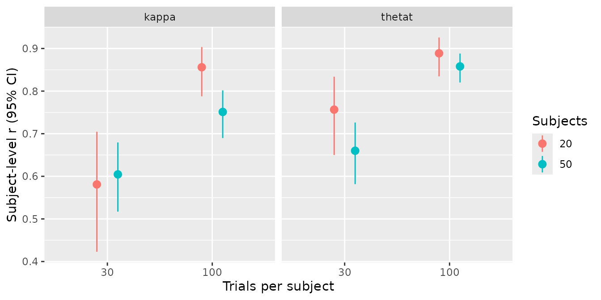
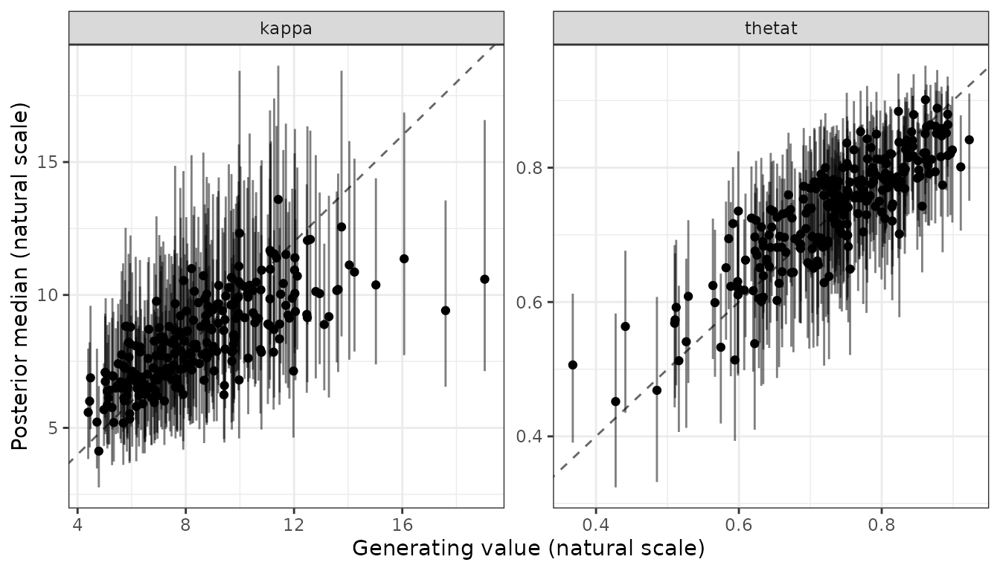

A recovery study repeats the loop of Validating a new bmm model, simulate, fit and
score, over a design: several numbers of subjects and trials, several
replications of each. recovery_grid() runs that loop and
takes care of what makes long simulations fragile: every cell is saved
as soon as it finishes, an interrupted run resumes from those files, and
a short preflight fit catches a broken model before hours are spent on
it.
The example below is the grid behind recovery_mixture2p,
the recovery object that ships with the package. Its results are used
live on this page. The run took 8 minutes 58 seconds, compilation and
preflight included.
The call
library(bmmtools)
recovery_mixture2p <- recovery_grid(
bmm::mixture2p(resp_error = "y"),
grid = expand.grid(n_subjects = c(20, 50), n_trials = c(30, 100)),
pars = c(kappa = log(8), thetat = qlogis(0.75)),
sds = c(kappa = 0.3, thetat = 0.5),
dir = "data-raw/fits/recovery", reps = 5, seed = 2026,
chains = 4, iter = 1000, cores = 4, backend = "cmdstanr",
refresh = 0, silent = 2
)Everything after seed is passed to
fit_cached() and from there to bmm::bmm().
The design grid
grid is a data frame with one row per condition. It
needs the columns n_subjects and n_trials; any
other column named after a parameter sets that parameter’s population
value for the row, and a column sd_<parameter> sets
its between-subject SD. Both override pars and
sds, which act as the defaults for every row:
grid <- expand.grid(
n_subjects = c(20, 50),
n_trials = c(30, 100),
kappa = log(c(4, 16))
)A design created with SimDesign::createDesign() is a
data frame and can be passed as it is. model can also be a
function of one grid row that returns a model, for designs where the
model’s arguments change between rows; the link table must stay the same
across rows, because one table scores every cell.
Smoke run and preflight
Before the full grid, run it with smoke = TRUE. This
fits the first two rows with two replications into
<dir>/smoke, so a smoke run never overwrites or gets
mistaken for a full one.
By default, the grid also runs a preflight: before
any cell, the first cell is fitted once with one chain and 200
iterations into <dir>/preflight. A compile error, an
init failure or data the model rejects stop the grid there, with nothing
else run. The preflight is skipped when the first cell already has a
cached fit.
Files on disk and resuming
Each cell writes two files as soon as it is done, named after its grid row and replication:
-
cell-<row>-rep-<rep>-sim.rdsholds the simulated data and truth; -
cell-<row>-rep-<rep>.rdsholds the fit, with its cache key incell-<row>-rep-<rep>.key.
To resume after an interruption, run the same call again. A cell
whose simulation file exists reads it instead of simulating, and a cell
whose fit matches its key reuses the fit, so finished cells cost only
the time to read them. Rerunning the script that builds the example
objects, with all 20 grid fits on disk, took 23 seconds, including two
prior-only fits that were not cached yet. If an argument that enters the
key changes, say iter, every affected cell is refitted and
the message names the component that changed.
Cells run in replication-major order: every row of replication 1, then every row of replication 2, and so on. If a run is stopped early, the finished cells already span the whole design.
Seeds and simulated people
seed is a master seed. Each cell derives its own seed
from it, its row and its replication, so any single cell can be
reproduced without running the ones before it.
subjects = "redraw", the default, draws new subject
values in every replication. subjects = "fixed" draws them
once per row, in the first replication, and reuses them in every later
one, so the replications become repeated simulations of the same
people.
When a cell fails
A cell whose fit throws an error is recorded with
status = "error", the grid goes on, and a warning at the
end lists the failed cells with the first error message. A cell whose
data cannot be generated stops the grid instead, since that is an error
in the design rather than in the sampler.
Two estimators in one grid
ml = TRUE fits every cell a second time subject by
subject with no pooling, on the same simulated data, and scores both
estimators against the same truth at the subject level, so
summary() returns a row per estimator.
ml = list(...) passes arguments to fit_ml(),
and ml = list(method = "optim") runs the second fit without
a compiler. The per-cell record is attr(x, "ml_cells"), and
a cell whose ML fit fails keeps its hierarchical rows. Hierarchical estimation against
subject-wise maximum likelihood works through the comparison and
what its columns mean.
The result
The grid returns a single bmmtools_recovery object with
population and subject rows for every cell. The condition
column names the grid row:
recovery_mixture2p
#> <bmmtools_recovery>
#> Scored on the natural scale.
#> 5 fits, 2 parameters: kappa, thetat.
#> Levels: population, subject.
#>
#> # A tibble: 16 × 24
#> condition term estimator level scale n n_replications n_converged
#> <chr> <chr> <chr> <chr> <chr> <dbl> <int> <int>
#> 1 row-1 kappa bayes population natural 5 5 3
#> 2 row-1 thetat bayes population natural 5 5 3
#> 3 row-2 kappa bayes population natural 5 5 4
#> 4 row-2 thetat bayes population natural 5 5 4
#> 5 row-3 kappa bayes population natural 5 5 5
#> 6 row-3 thetat bayes population natural 5 5 5
#> 7 row-4 kappa bayes population natural 5 5 3
#> 8 row-4 thetat bayes population natural 5 5 3
#> 9 row-1 kappa bayes subject natural 20 5 3
#> 10 row-1 thetat bayes subject natural 20 5 3
#> 11 row-2 kappa bayes subject natural 50 5 4
#> 12 row-2 thetat bayes subject natural 50 5 4
#> 13 row-3 kappa bayes subject natural 20 5 5
#> 14 row-3 thetat bayes subject natural 20 5 5
#> 15 row-4 kappa bayes subject natural 50 5 3
#> 16 row-4 thetat bayes subject natural 50 5 3
#> bias rmse coverage ci_width r r_low r_high rank_r ccc ccc_low
#> <dbl> <dbl> <dbl> <dbl> <dbl> <dbl> <dbl> <dbl> <dbl> <dbl>
#> 1 0.427 1.45 0.8 3.58 NA NA NA NA NA NA
#> 2 0.0349 0.0678 0.8 0.151 NA NA NA NA NA NA
#> 3 0.656 0.671 1 2.45 NA NA NA NA NA NA
#> 4 -0.000662 0.00505 1 0.0850 NA NA NA NA NA NA
#> 5 0.125 0.512 1 2.93 NA NA NA NA NA NA
#> 6 -0.00646 0.0240 1 0.112 NA NA NA NA NA NA
#> 7 0.121 0.225 1 1.63 NA NA NA NA NA NA
#> 8 -0.00299 0.00909 1 0.0645 NA NA NA NA NA NA
#> 9 -0.275 2.38 0.87 7.93 0.581 0.423 0.705 0.538 0.0508 0.0148
#> 10 0.0210 0.0869 0.92 0.292 0.757 0.650 0.834 0.671 0.587 0.483
#> 11 0.0974 2.39 0.924 8.49 0.605 0.517 0.679 0.615 0.255 0.207
#> 12 0.00457 0.0712 0.92 0.272 0.660 0.582 0.726 0.617 0.453 0.379
#> 13 -0.144 1.58 0.96 6.25 0.856 0.788 0.903 0.819 0.799 0.731
#> 14 0.00453 0.0500 0.97 0.197 0.889 0.835 0.926 0.830 0.854 0.796
#> 15 -0.259 1.69 0.932 5.76 0.751 0.690 0.802 0.776 0.676 0.615
#> 16 0.00164 0.0502 0.948 0.189 0.858 0.820 0.888 0.825 0.825 0.786
#> ccc_high ccc_accuracy ccc_scale_shift ccc_location_shift calibration_slope truth_sd
#> <dbl> <dbl> <dbl> <dbl> <dbl> <dbl>
#> 1 NA NA NA NA NA 0
#> 2 NA NA NA NA NA 0
#> 3 NA NA NA NA NA 0
#> 4 NA NA NA NA NA 0
#> 5 NA NA NA NA NA 0
#> 6 NA NA NA NA NA 0
#> 7 NA NA NA NA NA 0
#> 8 NA NA NA NA NA 0
#> 9 0.0867 0.474 0.261 -0.689 1.77 2.44
#> 10 0.676 0.813 0.880 0.207 0.825 0.0942
#> 11 0.302 0.652 0.375 0.0871 1.59 2.80
#> 12 0.521 0.866 0.649 0.0546 0.982 0.0917
#> 13 0.852 0.944 0.763 -0.0450 1.11 2.87
#> 14 0.897 0.962 0.840 0.0450 1.05 0.0990
#> 15 0.730 0.904 0.669 -0.126 1.11 2.45
#> 16 0.858 0.965 0.814 0.0206 1.05 0.0956
#>
#> r, rank_r and ccc are NA where they are not estimable: they need at least 3 complete pairs and spread on both sides.summary() groups by condition. Population-level
correlations are NA here because every replication of a row
uses the same population values, so the truth has no spread within a
condition; bias, RMSE and coverage are still defined.
The attribute cells has one row per cell, with its seed,
file, status, runtime in seconds and convergence verdict:
cells <- attr(recovery_mixture2p, "cells")
cells
#> # A tibble: 20 × 9
#> condition replication n_subjects n_trials seed file status elapsed converged
#> <chr> <int> <int> <int> <dbl> <chr> <chr> <dbl> <lgl>
#> 1 row-1 1 20 30 9946 data-raw/fits… ok 0.630 TRUE
#> 2 row-2 1 50 30 17865 data-raw/fits… ok 0.656 TRUE
#> 3 row-3 1 20 100 25784 data-raw/fits… ok 0.229 TRUE
#> 4 row-4 1 50 100 33703 data-raw/fits… ok 0.595 TRUE
#> 5 row-1 2 20 30 9947 data-raw/fits… ok 0.240 FALSE
#> 6 row-2 2 50 30 17866 data-raw/fits… ok 0.682 TRUE
#> 7 row-3 2 20 100 25785 data-raw/fits… ok 0.235 TRUE
#> 8 row-4 2 50 100 33704 data-raw/fits… ok 0.502 TRUE
#> 9 row-1 3 20 30 9948 data-raw/fits… ok 0.230 TRUE
#> 10 row-2 3 50 30 17867 data-raw/fits… ok 0.501 FALSE
#> 11 row-3 3 20 100 25786 data-raw/fits… ok 0.232 TRUE
#> 12 row-4 3 50 100 33705 data-raw/fits… ok 0.679 FALSE
#> 13 row-1 4 20 30 9949 data-raw/fits… ok 0.232 FALSE
#> 14 row-2 4 50 30 17868 data-raw/fits… ok 0.499 TRUE
#> 15 row-3 4 20 100 25787 data-raw/fits… ok 0.314 TRUE
#> 16 row-4 4 50 100 33706 data-raw/fits… ok 0.494 FALSE
#> 17 row-1 5 20 30 9950 data-raw/fits… ok 0.231 TRUE
#> 18 row-2 5 50 30 17869 data-raw/fits… ok 0.601 TRUE
#> 19 row-3 5 20 100 25788 data-raw/fits… ok 0.233 TRUE
#> 20 row-4 5 50 100 33707 data-raw/fits… ok 0.600 TRUETo read the summary against the design, join the design columns from
cells:
design <- unique(cells[c("condition", "n_subjects", "n_trials")])
subject_summary <- summary(recovery_mixture2p) |>
dplyr::filter(level == "subject") |>
dplyr::left_join(design, by = "condition")
subject_summary[c(
"term", "n_subjects", "n_trials", "n_converged",
"bias", "rmse", "coverage", "r", "r_low", "r_high"
)]
#> # A tibble: 8 × 10
#> term n_subjects n_trials n_converged bias rmse coverage r r_low r_high
#> <chr> <int> <int> <int> <dbl> <dbl> <dbl> <dbl> <dbl> <dbl>
#> 1 kappa 20 30 3 -0.275 2.38 0.87 0.581 0.423 0.705
#> 2 thetat 20 30 3 0.0210 0.0869 0.92 0.757 0.650 0.834
#> 3 kappa 50 30 4 0.0974 2.39 0.924 0.605 0.517 0.679
#> 4 thetat 50 30 4 0.00457 0.0712 0.92 0.660 0.582 0.726
#> 5 kappa 20 100 5 -0.144 1.58 0.96 0.856 0.788 0.903
#> 6 thetat 20 100 5 0.00453 0.0500 0.97 0.889 0.835 0.926
#> 7 kappa 50 100 3 -0.259 1.69 0.932 0.751 0.690 0.802
#> 8 thetat 50 100 3 0.00164 0.0502 0.948 0.858 0.820 0.888
library(ggplot2)
ggplot(
subject_summary,
aes(factor(n_trials), r,
ymin = r_low, ymax = r_high,
colour = factor(n_subjects)
)
) +
geom_pointrange(position = position_dodge(width = 0.4)) +
facet_wrap(~term) +
labs(
x = "Trials per subject", y = "Subject-level r (95% CI)",
colour = "Subjects"
)
Because the object keeps its class through dplyr verbs, a single cell can be plotted directly:
recovery_mixture2p |>
dplyr::filter(condition == "row-4", level == "subject") |>
plot_recovery()
elapsed is the time a cell took in the run that returned
the object, in seconds, so the fitting time of the grid in minutes
is:
sum(cells$elapsed) / 60
#> [1] 0.1435761After a resume, a cell whose fit was read from disk records the time it took to read it, not the time it once took to fit.